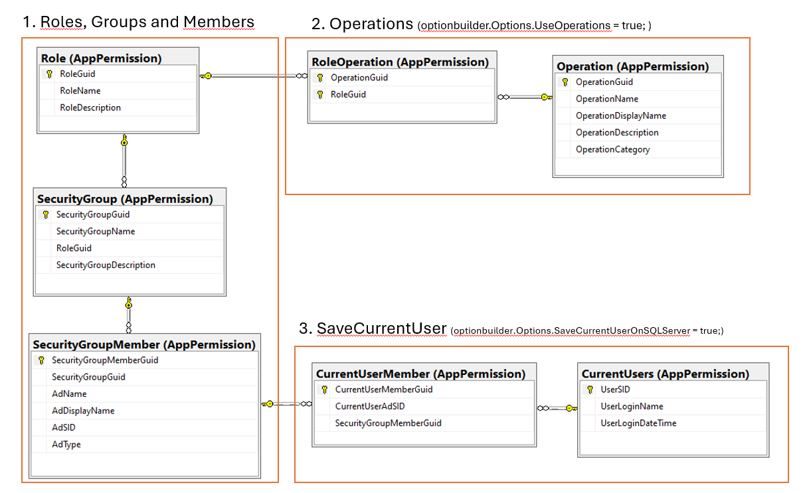
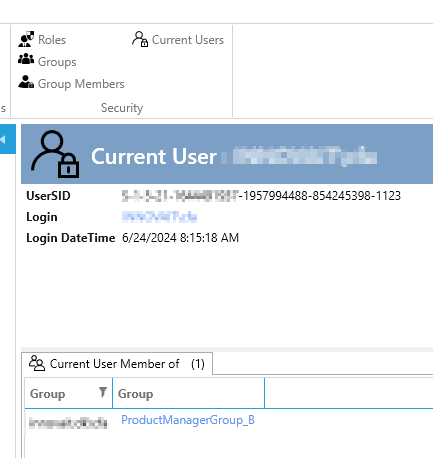

Implementation
Requirements:
- The ArchitectureItem "Security" is added to the designer (if not the appextension will not be shown)
- Some operations (and roles) has been defined (you can keep add/delete operation/roles in the designer)
To implement Security Extension:
- Add AppExtension: Choose on of the "Security" AppExtension
- Follow the instructions in the readme.txt
When you have implemented the Security AppExtension there are created 7 SQL tables in the database and the UI for maintaining these tables is added either to your Ribbon og OutlookBar.
The 7 tables are use depeding on what you have chosen.

When you "Create code" in the designer (in "Security") there are now also generated a "InsertData-sqlscript.sql" in the Security-folder in the data project. If you have defined roles and operations in the designer, these are in the sql-script. So if you run the sql-script the roles and operations are inserted into the database.
Before the Security AppExtension you needed to add the current user to roles in code see here in the ApplicationSecurityBuilder.
The Security AppExtension files out the Roles with data from the database.
Save CurrentUser On SQLServer
The Security AppExtension can be configured to save the current user and he/she's groupmembership to the SQL database each time the user logins in the application. When the user exits the application the data is deleted. You configure it in the app.xaml.cs:
ApplicationBuilder
.AddSecurityAppExtension(optionbuilder => {
optionbuilder.Options.SaveCurrentUserOnSQLServer = true;
});
When this is configured you get some extra UI where you can see which users that are currently logged in the application and their groupmembership.
